Relative
Wer vor und hinter dir fährt, mit iRating-Prognose, Lizenz, Klassenfarbe und Rundenstand. Kommt ein schnellerer Prototyp von hinten, steht es als Warnung in der Zeile.
Overlays und Setup-Garage für iRacing
Relative, Standings, Renningenieur mit Sprit-Ampel, Track-Map, Radar, Wetter und mehr. Gebaut von einem Sim-Racer für die Community: kostenlos, ohne Werbung, ohne Konto.
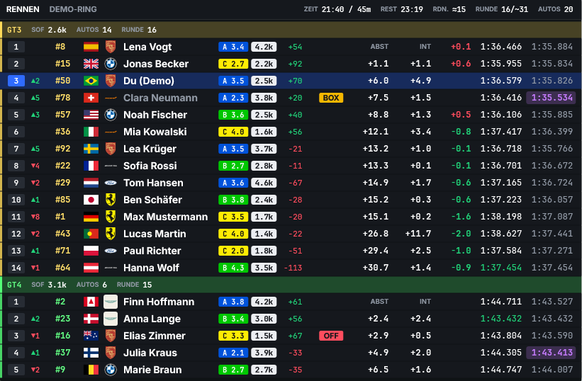

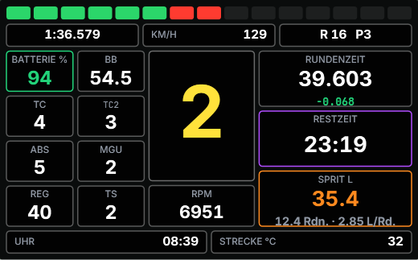
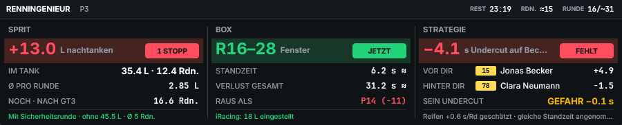
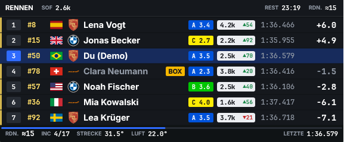
Nur das, was du brauchst – alles Technische im Profi-Modus
Jetzt verfügbar – Update per Knopf im Programm
Garage Overlay heißt ab Version 1.0 Pitlay: neuer Name, neues Icon, gleiche Idee. Overlays, die dir im Rennen sagen, was du wissen musst, und eine Setup-Garage, die nach der Session zeigt, wo die Zeit liegt.
Für alle, die es schon nutzen, ändert sich nichts Schlimmes: Das Update kommt per Knopf im Steuerfenster, Einstellungen, Profile und Positionen bleiben, wie sie sind.
Zuletzt dazugekommen
Jedes einzeln an- und abschaltbar, verschiebbar, in Größe und Schrift einstellbar
Wer vor und hinter dir fährt, mit iRating-Prognose, Lizenz, Klassenfarbe und Rundenstand. Kommt ein schnellerer Prototyp von hinten, steht es als Warnung in der Zeile.
Das ganze Feld nach Klassen, mit SoF je Klasse, Abstand, Intervall, schnellster Runde in Lila und Box-Status. Vor dem Start zeigt es die echte Reihenfolge auf der Strecke.
Drei Karten, eine Entscheidung: Sprit-Ampel, Boxenfenster mit Jetzt oder Vorbei, Undercut-Rechnung gegen den Vordermann. Dazu die Reserve, mit der gerechnet wird.
Die Strecke in ihrem echten Seitenverhältnis, mit Kurvennummern, Start-Ziel-Linie und allen Autos in Klassenfarbe. Zeichnet sich beim ersten Mal selbst auf.
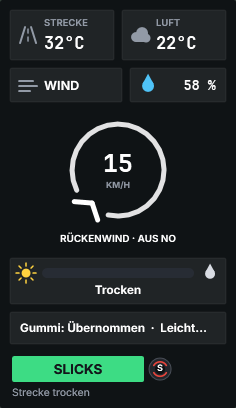
Strecken- und Lufttemperatur, Windring mit Richtung, Luftfeuchte, Nässe-Leiste und bei Regen die Reifen-Empfehlung: Slicks, Grenzbereich oder Regenreifen, mit Blick aufs Feld.

Autos neben dir als Scheibe, rote Warnflächen links und rechts. Erscheint nur, wenn jemand nah ist, und verschwindet wieder.

Kästchen je Sektor: Lila für Bestzeit, Grün für schneller als letzte Runde, Gelb für langsamer. Darunter die Idealrunde.
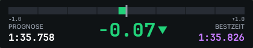
Zeitvergleich zur besten Runde als Balken mit Verlauf, groß genug fürs Augenwinkel.
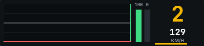
Gas, Bremse, Lenkung und Kupplung als Verlauf, dazu Pedalbalken, Gang mit Schaltblitz und Tempo.
Ein schmaler Balken unter dem Spiegel, der sich füllt, je näher der schnellere Prototyp kommt. Länge und Dicke ziehst du so, dass er genau passt.
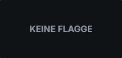
Startampel mit fünf Lichtern, Gelb, Blau, Schwarz-Weiß, Ziel. Blendet sich ein, wenn es zählt.
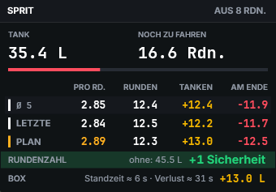
Als Einzelbaustein, wenn du den Renningenieur nicht willst: Tank, Verbrauch, Rest bis Ziel, Grenzfall mit Sekunden.
Gang, Drehzahl-Leiste, Tempo, Rundenzeit mit Delta, Restzeit, Sprit und die Fahrerschalter des Autos wie Bremsbalance, TC und ABS.
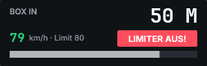
Erscheint nur in der Boxengasse: Meter bis zur Box, Tempo gegen Limit, Limiter-Hinweis und an der Ausfahrt das Signal, wann du wieder Gas geben darfst.
Kurze Meldungen, wenn es zählt: Slowdown, langsames Auto vor dir, Telemetrie-Aufzeichnung aus.
Eine Karte je Frage: Sprit, Box, Strategie
Die Sprit-Ampel sagt dir, ob es bis ins Ziel reicht. Grün: reicht. Orange: Grenzfall, eine Runde mehr oder weniger ist möglich, mit den Sekunden, die das entscheiden. Rot: Stopp nötig, mit der Menge, die du nachtanken musst. Im Mehrklassen-Rennen rechnet er mit dem Gesamtführenden, weil der das Rennende bestimmt, und schreibt dazu, nach wem er rechnet.
Die Box-Karte zeigt das Fenster, in dem du stoppen kannst, die Standzeit, den Verlust in der Boxengasse und die Position, mit der du wieder rauskommst. Die Strategie-Karte rechnet den Undercut gegen den Vordermann und den Hintermann durch: klappt, fehlt, oder Gefahr.
Wer lieber Einzelbausteine mag, schaltet Sprit, Box und Strategie als eigene Overlays an.
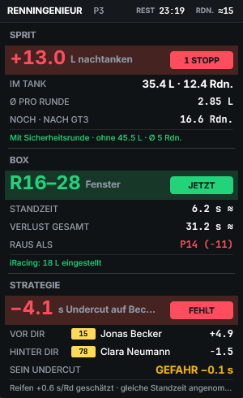
Liest deine Telemetrie und sagt, woran das Setup krankt
Die Setup-Garage läuft mit dem Overlay mit und wertet jede neue Telemetrie-Datei aus iRacing automatisch aus. Sie zeigt dir, wo die Zeit liegt, erkennt Über- und Untersteuern aus den Daten und schlägt Klicks am Setup vor, mit Regeln je Auto, damit kein Vorschlag außerhalb des Erlaubten landet.
Sie schreibt dabei nie in deine Setup-Dateien. Du bekommst den Vorschlag, iRacing bleibt deins.
Overlays im Stream und ein Werkzeug, das dir Arbeit abnimmt
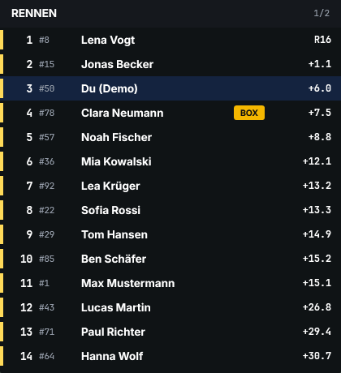
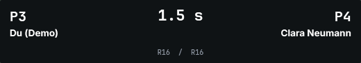

Wie ein Setup-Sheet: was drin ist und was es kostet
| Bereich | Funktion | Status |
|---|---|---|
| Im Rennen | Relative, Standings, Track-Map, Radar, Verkehrsbalken | Kostenlos |
| Im Rennen | Renningenieur: Sprit-Ampel, Boxenfenster, Undercut | Kostenlos |
| Im Rennen | Sprit, Box, Pit-Helper, Rennflaggen, Warnungen | Kostenlos |
| Im Rennen | Wetter mit Reifen-Empfehlung, Dashboard | Kostenlos |
| Training | Delta, Sektoren mit Idealrunde, Inputs | Kostenlos |
| Nach der Session | Setup-Garage: Handling-Diagnose, Setup-Leiter, Vorher/Nachher, Fahr-Coach | Kostenlos |
| Programm | Profile je Session-Art, Lenkrad-Tasten, Schonmodus, Schriften und Farbvorlagen | Kostenlos |
| Programm | iRacing-Update-Check: meldet, wenn iRacing nach einem Update Werte ändert | Neu, kostenlos |
| Stream | OBS-Browserquellen, Chat-Overlay für Twitch und YouTube | Kostenlos |
| Team | Teamsprit: Spritrechner rechnet weiter, wenn ein Teamkollege fährt | Mit Abo |
| Team | Stintplaner mit Plan-Code fürs Team und Stint-Overlay | Mit Abo |
| Stream | OBS-Automatik: Szenen, Clips, YouTube-Kapitel | Mit Abo |
| Stream | Broadcast-Overlays für Liga-Streams | Mit Abo |
Was schon drin ist und was als Nächstes dazukommt
Fehlerbericht mit einem Klick, Spritmessung nur noch von Linie zu Linie, Overlays ohne kurzes Neuladen. Update per Knopf, Einstellungen bleiben.
Teamsprit, Stintplaner, OBS-Automatik und Broadcast-Overlays sind für Abonnenten freigeschaltet – ohne dass du etwas neu installieren musst.
Fehler und Wünsche aus der Community kommen in die nächsten Updates.
Was kostet, was nicht
Ohne Werbung, ohne Konto.
Sofort frei nach der Anmeldung, ohne Neuinstallation.
twitch.tv/chrisseitz abonnieren.
In Pitlay unter „Stream“ auf „Mit Twitch anmelden“ klicken.
Den Code im Browser bestätigen. Kein Passwort, kein Konto bei uns.
Was das Programm braucht, was es kostet und was es nicht tut
Windows 10 oder 11 und iRacing. Das Overlay liest die Live-Schnittstelle von iRacing, dieselbe, die alle Overlay-Programme nutzen. Kein Konto, keine Anmeldung, keine Aufzeichnung nötig. Beim Start sucht es iRacing selbst und wartet, bis du im Auto sitzt.
Wenig. Das Overlay läuft mit niedriger Priorität, iRacing bekommt immer zuerst Rechenzeit. Die Telemetrie wird höchstens 30-mal pro Sekunde gelesen, jedes Overlay zeichnet nur 5- bis 15-mal pro Sekunde. Unten im Steuerfenster steht, wie viele Millisekunden pro Sekunde es gerade braucht. Wer iRacing am Limit fährt, schaltet den Schonmodus ein.
Ja. Die Setup-Garage ist ein eigenes Programm und läuft nur, wenn das Häkchen „Setup-Garage mitstarten“ gesetzt ist. Ohne Häkchen gibt es nur die Overlays, ohne Auswertung und ohne zweiten Prozess. Umgekehrt geht es auch: Garage an, alle Overlays aus.
Es verändert nie eine Setup-Datei und ändert nichts an iRacing. Nur wenn du im Team-Zentrum auf „Holen“ klickst, kopiert es das Setup eines Teamkollegen unverändert in deinen iRacing-Ordner. Es lädt nichts hoch: Telemetrie, Auswertung und Einstellungen bleiben auf deinem PC. Ins Internet geht es nur für die Update-Prüfung bei GitHub und, wenn du es einschaltest, für den Twitch- oder YouTube-Chat.
Keine Anmeldung, kein Konto
GarageOverlay-Setup.exe laden und starten. Es braucht keine Admin-Rechte und installiert nach %LOCALAPPDATA%. Meldet sich Windows beim ersten Start, weil die Datei nicht signiert ist: „Weitere Informationen“, dann „Trotzdem ausführen“.
Das Overlay findet iRacing von selbst. Stell iRacing auf „Borderless Window“, dann liegen die Overlays sauber über dem Spiel. Im Steuerfenster wählst du, was du sehen willst.
Mit Strg+Umschalt+O schiebst du die Overlays an ihren Platz, Mausrad oder Ecke ändert die Größe, der Rand Breite und Höhe. Profile wechseln automatisch zwischen Training, Quali und Rennen. Updates holt die App selbst.
Was am häufigsten kommt
Nichts. Alles fürs Fahren bleibt kostenlos, ohne Werbung und ohne Pflicht-Abo. Als Dankeschön gibt es Extras für Abonnenten von twitch.tv/chrisseitz: Teamsprit, Stintplaner, OBS-Automatik und Broadcast-Overlays. Wer ohne Twitch helfen will: ko-fi.com/chrisseitz. Der Quellcode ist offen (MIT-Lizenz).
Nein. Niedrige Prozess-Priorität, Telemetrie höchstens 30-mal pro Sekunde, Overlays 5- bis 15-mal pro Sekunde, im Grafikkarten-Modus übernimmt Windows die Transparenz. Die Statuszeile im Steuerfenster zeigt die gemessene Last. Wer trotzdem Ruckler sieht, schaltet den Schonmodus ein und schickt das Log, dann schauen wir rein.
Ja. Die Setup-Garage ist abschaltbar (Start → Allgemein → „Setup-Garage mitstarten“). Die Overlays brauchen keine Aufzeichnung, sie lesen nur die Live-Daten, die iRacing ohnehin bereitstellt.
Sie liest nach jeder Session die Telemetrie-Datei, die iRacing selbst schreibt, und zeigt dir, wo die Zeit liegt, ob das Auto über- oder untersteuert und welcher Klick am Setup dagegen hilft. Alles auf deinem PC, ohne Internet. Umsetzen tust du den Vorschlag selbst in iRacing.
Ja. Jedes Overlay gibt es als Browser-Quelle für OBS, die Adresse steht im Steuerfenster beim jeweiligen Overlay. So läuft ein Overlay nur im Stream, ohne auf deinem Bildschirm zu liegen.
Nein. Weder das Overlay noch die Setup-Garage schreiben in iRacing-Dateien. Die Garage liest Telemetrie und macht Vorschläge, umsetzen tust du sie selbst in iRacing.
Das Overlay prüft beim Öffnen des Steuerfensters und einmal pro Stunde, ob es eine neue Version gibt, und installiert sie auf Knopfdruck. Die Installation läuft durch, das Overlay startet danach neu.
Ein Screenshot und ein Satz reichen, am besten mit der overlay.log aus dem Log-Ordner (Link unten im Steuerfenster). Entweder auf GitHub unter Issues oder direkt im Discord.